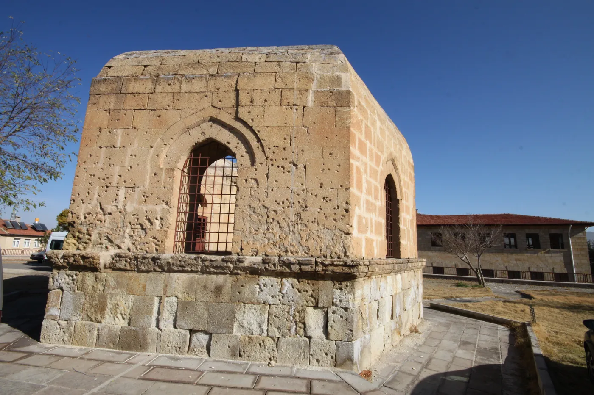

13. yüzyılda Kadı Kalesi uçbeyinin eşi ve kızları adına inşa edilen bu eser, düzgün kesme taştan yapılmış, altıgen planlı ve üstü açık bir türbedir. Yapının altı cephesinin her birinde kemerli pencereler yer almaktadır. Türbeye, iki yanlı taş merdivenlerle çıkılan, sivri kemerli bir niş içerisine yerleştirilmiş basık kemerli demir kapıdan giriş sağlanır. Osmanlı Devleti’ne isyan eden Mısır Vali Mehmet Ali Paşa’nın ordusu Afyon Sandıklı’da yenilip geri dönerken Ürgüp’ü yağmalamaya kalkınca Ürgüp halkı silahlı direniş göstermiştir. Kümbetin duvarlarında bulunan çok sayıdaki oyuk o günden kalma kurşun izleridir. Buraya halk eskiden adak olarak kitap getirirmiş, kitap okumak isteyenler kitabı okur ve yerine geri koyarlarmış.
Built in the 13th century in the name of the wife and daughters of the march-warden (uçbey) of Kadı Castle, this monument is an open-topped, hexagonal-plan tomb of finely cut stone. Each of its six faces has an arched window. It is entered through a low-arched iron door set within a pointed-arch niche, reached by stone stairs on two sides. When the army of Mehmet Ali Paşa, the rebel Governor of Egypt, was defeated at Afyon Sandıklı and tried to plunder Ürgüp on its way back, the people of Ürgüp put up armed resistance; the many cavities in the tomb's walls are bullet marks from that day. In the past, people brought books here as votive offerings — those who wished to read would read a book and return it to its place.